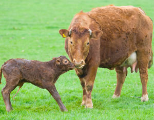

Are you ready to farm or homestead? You can learn from experience, but before you start raising livestock, you should understand what to expect. If you’ve already started reading, researching and asking questions, you probably know the answers to at least some of these questions. Either way, you’re sure to learn something new from the questions below.
1. Why are genetically hornless cattle and sheep referred to as polled?
The “poll” refers to the top of the head between the ears, which is where horns typically originate. Livestock may be either horned (with horns growing from the poll) or hornless (although occasionally small horns, called scurs, may be present). Those animals without horns are referred to as polled because the top of their heads are exposed.
2. What causes a hen to go broody?
A hen’s desire to hatch eggs is induced by elevated progesterone levels caused by a complex interaction among genetics, physiology and environmental stimuli. To encourage a hen to sit on eggs, isolate her from the flock and give her a secluded nest with several eggs.
3. My pigs insist on eating dirt. Is this a problem?
No, your pigs are practicing the art of “rooting” and will obtain all kinds of essential nutrients and minerals through the process.
4. Do I have to inject my newborn piglets with iron?
No, not if they were born on pasture or on dirt. Piglets will usually get all the iron they need from eating soil, but there’s generally no harm in giving them an iron injection even when they have access to soil.
5. I want to keep sheep but don’t want the hassle of shearing. What can I do?
You should select a true hair breed such as the Katahdin; these animals will shed on their own each year.
6. Do goats really eat tin cans?
No, goats are naturally inquisitive and can be mischievous, which translates to the likelihood that they’ll play with virtually any object in their pen. They usually don’t eat tin cans, but could become quite ill from large pieces of metal they ingest.
7. What’s the difference between hay and alfalfa?
Hay is produced by cutting plant material and letting it air-dry before baling or stacking. Alfalfa is a legume forage plant that is high in protein. You can make alfalfa hay, but not all hay contains alfalfa.
8. My cow has a fluid-filled balloon extending from beneath her tail. Does she need my help?
Probably not, assuming she was with a bull about nine months ago. In early- to mid-stages of labor, part of the amniotic sac will often precede the calf, particularly when the water has not yet broken.
9. My cow has been in labor for several hours, and I can only see the calf’s nose and one front hoof. Should I assist?
Yes, most likely the other front leg is trailing back and the calf is stuck. If possible, restrain the cow using a head gate, and carefully push the calf back in until you can reach the reversed leg and work it forward. Once you have both legs and the nose presenting, you might still need to assist by pulling (with the cow’s contractions, preferably) if the cow’s contractions have subsided or are very weak.
10. How can I keep my hogs from rubbing on the fences, which breaks them down?
The best solution for this problem is to install a single strand of electric fencing on the inside of the existing fence. Also consider sinking a heavy scratch post inside the pen - maybe a tree trunk with the bark on it, if you have one.
|
 ISTOCKPHOTO/MAURICE VAN DER VELDEN This newborn calf came into the world without human intervention, but how do you know when to assist a cow with the birth of a calf? |
|
|